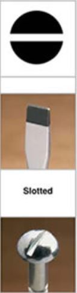
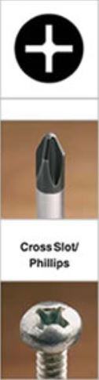
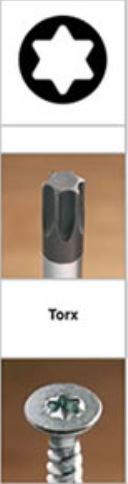
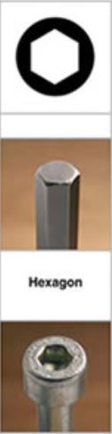

Tornillos para madera (tirafondos)
¿De que material estan compuestos?
- Cobre
- Bronce
- Acero inoxidable
- Aluminio
- Latón
¿Que acabados pueden tener?
- Galvanizado
- Bicromatado
- Niquelado
- Cromado
Tipos de cabezas
- Cabeza plana

- Cabeza puntiaguda

- Cabeza redondeada

Acabados de las cabezas
-
Cabeza fresada

-
Cabeza Phillips

-
Cabeza Torx

-
Cabeza tipo Allen
